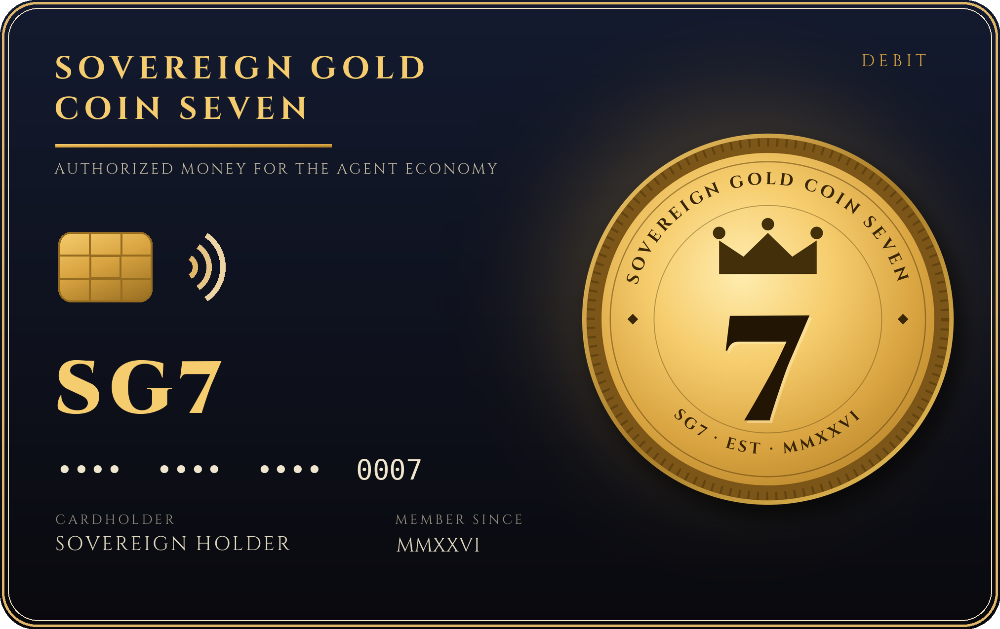

SOVEREIGN GOLD SEVEN (SG7)
Programmable Money for the Agent Economy — Authorized, Identity-Verified, Settled in Nano-Amounts
1. Abstract
The next economy will not be run by people clicking "buy." It will be run by AI agents — software acting on behalf of humans — requesting data, hiring other agents, paying for services, and moving money thousands of times a day in amounts too small for today's payment rails.
That economy has two unsolved problems. First, money that was designed as a joke: the most famous "agent-era" coin, Dogecoin, is a meme with no identity layer, no authorization layer, and no native utility — its value rests on attention alone. Second, agents that cannot prove who sent them: in September 2026, Amazon blocked Meta's Muse shopping agent from its marketplace because the agent could not reliably prove whose behalf it was acting on or what that person had actually approved. The industry's own verdict, in four words: access is not authority.
Sovereign Gold Seven (SG7) is a concept for the opposite design: a programmable coin for the agent economy in which every agent transaction is (a) identity-verified and human-authorized under the x401 pattern — the owner's wallet signs the exact terms, and if an agent changes the amount, the recipient, or any signed term, the signature no longer validates; (b) settled in nano-amounts over an x402-style pay-per-claim rail built for machine-speed micropayments; and (c) gated by the issuer's own nanobot swarm — there is no public sale in this design; the coin is acquired only by acquiring and running Alice's nanobots, and it is useful on day one as an access key across a real, already-operating ecosystem of products — AI agents for local businesses, an AI news station, sovereignty education, and local services — rather than a promise of future utility.
This paper describes the concept, the utility design, the bot-gated distribution model, the ecosystem it plugs into, proposed (not final) token parameters, and — plainly — the risks, the legal gate that stands before any issuance, and the facts a reader must not mistake for promises.
2. The Problem
2.1 Meme money has no floor of usefulness
Dogecoin and the meme coins that followed it proved that a community and a ticker can move markets. They did not prove anything else. A meme coin:
- has no identity layer — nobody, human or agent, proves anything about who is transacting or why;
- has no authorization layer — possession of a key is the only "permission" that exists, so a compromised or rogue agent spends exactly like an honest one;
- has no native utility — it buys nothing inside any product its issuer operates, because there is no product;
- depends entirely on continued attention, the one resource that reliably disappears.
Attention is a marketing asset. It is not a monetary design.
2.2 Agents are being handed money with no authority model
AI agents are already shopping, booking, quoting, and paying. In September 2026 the structural flaw surfaced in public: Meta released its Muse assistant (which reached No. 1 on the U.S. App Store, with Shopify connecting Shop Pay), and within weeks Amazon blocked Muse from its marketplace, citing concerns that the agent did not adequately identify itself or demonstrate that the person it acted for had authorized what it was doing.
In the same month, FinCEN and federal banking regulators issued guidance recognizing digital certificates and verifiable credentials — under certain conditions — as a permissible way for banks to verify customer identity. The direction of travel is unmistakable: the agent economy will run on verified identity and provable authorization, or it will not be allowed to run at all.
On October 15, 2026, the company Proof put that model into production with x401, an open protocol that lets any website ask an AI agent to prove who it is acting for and what that person approved — backed by an agent identity wallet in which the person approves, on their own device, exactly what their agent may do, and signs it. Change the amount, the recipient, or any signed term afterward, and the signature breaks.
2.3 Today's rails are the wrong size
Card networks and bank rails were built for human-sized, human-speed purchases. An agent economy clears thousands of claims worth fractions of a cent — an API call, a data claim, a per-article read, a per-route quote. Fees and settlement times designed for $40 purchases cannot carry $0.004 claims. The x402 pattern — paying per claim over ordinary HTTP — exists precisely to close this gap.
The problem, in one line: the agent economy is arriving with joke money, anonymous agents, and oversized rails. SG7 is designed against all three.
3. The Asset
Sovereign Gold Seven (SG7) is a proposed programmable digital asset with four defining properties:
- Authorization is native, not bolted on. SG7 transactions initiated by agents are designed to carry an x401-pattern authorization: a signed mandate from the asset owner specifying who the agent acts for, what it may do, and within what limits. A transaction outside the mandate is not merely discouraged — it fails verification.
- Settlement is nano-native. SG7 is designed to move in amounts as small as a fraction of a cent over an x402-style pay-per-claim rail, so agents can pay for single claims, calls, and actions without batching, accounts, or card minimums.
- Utility precedes speculation. SG7 is designed as an access and settlement key inside an ecosystem that already exists and already sells products (Section 6). The coin's usefulness does not depend on a future roadmap being believed; it depends on products that are live today choosing to honor it.
- Access is gated by the swarm. SG7 is designed to be acquired only through an active deployment of the issuer's nanobots (Section 4.5). The bots are the front door: no swarm, no coin. Distribution is a product relationship, not an open-market sale.
On the word "Gold": gold in the name is brand and treasury policy (Section 4.4), not a redemption promise. SG7 is not redeemable for gold, is not presently backed by gold, and Section 10 states this again in plain language. Any reserve would exist only if and when it is built, disclosed, and independently verifiable.
4. Utility — The Five Pillars
4.1 Pillar One: Authorized Money
The owner of SG7 sets programmable spending mandates for their agents: signed instructions that define, in advance, what an agent may do with money — maximum amount per transaction and per day, approved categories of counterparty, approved purposes, expiry. The agent transacts freely inside the mandate and cannot transact outside it, because every spend carries the owner's signature over the exact terms (the x401 pattern). If the agent — buggy, compromised, or manipulated — alters the amount, the recipient, or any term, the signature no longer validates and the payment does not settle.
This is the structural answer to the Amazon–Muse problem: not "trust the agent," but "the agent can only ever show you a signed instruction from its human."
4.2 Pillar Two: Agent Settlement
Agents increasingly need to pay each other: a receptionist agent buying a data claim, a content agent paying a research agent, a quoting agent paying for a measurement. SG7 is designed as the settlement asset for these machine-to-machine nano-payments, with verified identity on both ends — each side's agent presents the identity and mandate of the principal it acts for. Settlement between strangers becomes possible without accounts, invoices, or card rails, and without anonymity: both principals are identified, both mandates are signed, both limits are enforced by the rail itself.
4.3 Pillar Three: Ecosystem Access
SG7 is designed to function as an access key across the issuer's operating ecosystem (Section 6): tiered access to AI agent services, the AI News Daily station's premium layers, sovereignty and business training, and local services. Holding or spending SG7 inside these products is the coin's demand floor — utility that exists whether or not any exchange ever lists it. Access tiers, thresholds, and pricing are business decisions to be published by each product, and may change; the design commitment is that the ecosystem honors the coin from the start rather than retrofitting utility after a sale.
4.4 Pillar Four: Treasury Discipline — the Gold Policy
The project adopts a gold-referenced treasury policy: the stated long-term policy is to build and hold a treasury reserve referenced to physical gold, acquired from ecosystem revenue according to a published schedule, held with a disclosed custodian, and reported on a regular cadence if and when such a reserve exists.
Read this precisely:
- This is a policy and an aspiration, not a backing. As of this paper, no gold reserve exists, no coin is redeemable for gold, and no holder has any claim on gold.
- The gold theme expresses a monetary philosophy — discipline, scarcity, and an anchor outside pure attention — and a treasury target. Targets can be missed, delayed, or abandoned; Section 10 covers this.
- If a reserve is ever established, its existence, custodian, and verification method will be disclosed in writing at that time, and not before claims are made about it.
5. How It Works (Plain English)
5.1 The signing flow (x401 pattern)
- You set the rules once. In your wallet, you approve a mandate for your agent: who it acts for (you), what it may buy, from whom, up to what amount, until when. You sign it on your own device.
- Your agent goes to work. When it needs to pay — say, a fraction of a cent for a data claim — it presents its mandate and a payment request stating the exact amount, recipient, and purpose.
- The other side checks the signature. The receiving service verifies: Is this agent acting for a real, identified person? Did that person actually approve these terms? Is the amount inside the signed limits?
- Tampering breaks it. If anything about the request differs from what was signed — a changed amount, a swapped recipient — the signature no longer validates, and the payment does not happen. No phone call, no chargeback, no argument: the math refuses.
5.2 The nano rail (x402 pattern)
Payments ride an x402-style pay-per-claim rail: a service names a tiny price for a single claim (one API response, one verified data point, one article, one action); the agent's wallet pays that exact amount over ordinary web requests; the service delivers instantly. No subscriptions to manage, no minimums, no invoices. The working demonstration of this pattern — identity check plus nano-payment, in the browser — already runs in the project's own Alice NanoPay Bots lab.
5.3 A worked example
A contractor's AI receptionist (an Alice agent) needs a verified property measurement to quote a job. It requests the measurement from a data service. The service quotes $0.006 for the claim. The receptionist's mandate — signed by the contractor — allows data purchases up to $0.50 per day from approved services. The claim is inside the mandate, identity verifies on both ends, six-tenths of a cent settles instantly, and the quote goes out. Total human involvement: the signature given once, days earlier. Total time: seconds. Total paperwork: none.
6. Ecosystem Map — The Coin Plugs Into Products That Already Exist
The competitive claim of SG7 is not a whitepaper promise. It is that the issuing ecosystem is already built and operating:
| Property | What it is | SG7's designed role |
|---|---|---|
| Alice AI Office Hub (aliceaihub.xyz) | AI agents for local businesses — receptionists, estimators, follow-up, reputation, content agents; live storefront with subscription plans and a $1 trial | Access + settlement: agent tiers honored in SG7; agents settle nano-claims in SG7 |
| Alice NanoPay Bots (live lab) | Interactive lab demonstrating the x401 signing flow and the x402 nano-payment pattern | The public proof-of-concept for Pillars 1 and 2 |
| AI News Daily | An AI news station — daily editions, newspaper-style hook ads, video wire — "brought to you by Alice" | Access: premium station layers, archives, and features keyed to SG7 |
| Private Money Rights Playbook & Founders | Sovereignty/UCC education, the Private Money Rights Playbook, and the application-only Founders Program | Access: training and program tiers honored in SG7 |
| Capital 7 Logistics | A real, operating local services company (moving, handyman, gutter services) in Luzerne County, PA | Access/settlement pilot: a physical-world business inside the same system |
| SG7 Wire (proposed) | The coin's own branded news show — settlement reports, burn reports, and the Road to Value scoreboard, published as a sister segment alongside AI News Daily (see show.md) | Attention + transparency: the ecosystem's numbers, reported on a cadence; sponsorships and premium layers denominated in SG7 |
| The SG7 Factory (proposed) | A catalog of branded product lines priced in SG7 at the Seven Standard — agent plans, swarm deployments, scans, sponsorships, guides, and member artifacts (see factory.md) | Demand: every priced line is a standing reason to acquire and hold SG7 inside the ecosystem |
The Wire and the Factory are the two proposed additions that widen the ecosystem: one manufactures attention and verifiable reporting, the other manufactures things worth buying with the coin. Both are value drivers — utility and demand — and neither is, or may be described as, a promise about price.
Most token projects promise an ecosystem later. This one starts from an ecosystem and adds the coin. That inversion — utility first, asset second — is the core of the design.
7. Token Design — Proposed Parameters
Everything in this section is a PROPOSAL for discussion, not a final specification and not a promise. Final parameters, if the project ever proceeds past the legal gate (Section 9), will be published in a superseding document. No parameter here creates any right or expectation.
- Supply (proposed): a fixed, capped supply of 10,000,000,000 SG7 (10 billion), with no inflationary minting after issuance — a large enough base for nano-denominated agent settlement at the Seven Standard rate, permanently capped, and designed to contract under the burn mechanism below toward a hard floor of 7,000,000,000 (the Seven Floor). Final figure to be set at design lock.
- Distribution (proposed): allocations across ecosystem treasury, public circulation, founder vesting (below), a creator-rewards pool (Section 9C), an airdrop budget (Section 9D), a charity reserve (Section 9E), and the locked reserve — with vesting and lock periods for insider allocations published before any circulation. No allocation figure is final in this draft; every figure named is a proposal for the founders' confirmation at design lock.
- Genesis Pool (proposed): circulation begins with a genesis pool of 1,000,000,000 SG7 (1 billion) — the only supply that enters circulation at launch. The genesis pool is the working float: it is what bot-gated acquisition distributes, what ecosystem services are priced in, and what the settlement rail clears against while the ecosystem is young.
- Locked Reserve (proposed): the remaining 9,000,000,000 SG7 are minted to a locked reserve/treasury at issuance and do not circulate. Reserve coins are released only in published tranches, each tranche tied to a published ecosystem milestone (adoption and usage markers of the kind listed in Section 9A), under rules fixed at design lock. The size, number, and milestone triggers of tranches are design-lock TBD — deliberately unspecified in this draft, because a release schedule written before the legal gate and the design lock would be a promise this paper does not make.
- Founders' allocation (proposed): the founders of this project are Madison Hoskins and Shateek Ferguson. Their stake is a defined tranche of 700,000,000 SG7 — 7% of the total supply — carved out of the 9,000,000,000 locked reserve, not new supply (the cap stays 10,000,000,000; the reserve's unallocated remainder falls to 8,300,000,000). The tranche is split evenly — 350,000,000 SG7 per founder — and is subject to both locks that govern the reserve: it may be released only inside the same published, milestone-tied tranche schedule as every other reserve release, and on a time-vesting schedule fixed at design lock, so no founder coin can move ahead of the milestones that justify its release or ahead of its vesting date. Founder coins carry no special transfer, pricing, or redemption rights. Rehearsal wallet addresses for the founders and for the architect (master) operations role are published in the contract rehearsal README (contract/README.md, Section 4.3); those addresses are test-stage identifiers only, hold nothing, and create no rights.
- Charity Reserve (proposed): 100,000,000 SG7 — 1% of total supply — carved from the locked reserve and held in its own dedicated public wallet, spendable only on direct community aid under the rules in Section 9E. Not operations money, not founder money, and never convertible into either.
- The Seven Standard rate (proposed): ecosystem access is denominated at seven coins to the dollar — $1 = 7 SG7 — for bot-gated acquisition and in-ecosystem service pricing (e.g., a $29/mo swarm service is a 203 SG7 service). The rate is the house conversion standard inside the ecosystem, in keeping with the Seven motif; it is an access/pricing parameter of the ecosystem, not a market price, a redemption promise, or a valuation. Arithmetic notes (illustrations only): distribution of the 1,000,000,000 genesis pool at the Seven Standard rate corresponds to ≈ $142.9 million of ecosystem throughput (1,000,000,000 ÷ 7 ≈ $142,857,143); distribution of the full 10,000,000,000 cap corresponds to ≈ $1.43 billion of ecosystem throughput (10,000,000,000 ÷ 7 ≈ $1,428,571,429). Both figures measure the design's scale at each stage; neither is a forecast.
- Burn (proposed mechanism): a defined share of settlement fees actually collected is permanently burned quarterly — under the modeled parameters, a 0.7% settlement fee of which 49% (7 × 7) is burned. The burn is indexed to real usage, never to a calendar promise, and a taper formula — burn strength scales with (supply − floor) ÷ (initial supply − floor) — shrinks it as supply falls, so the supply glides toward the Seven Floor of 7,000,000,000 SG7 and levels there permanently instead of burning toward zero; a hard cap makes crossing the floor mathematically impossible. The full calculation, formulas, and 10-year Low/Base/High scenarios are in the companion document burn-model.md (Base scenario: supply ends Year 10 at ≈ 9,094,000,000, 90.94% of original). A burn is a design mechanism under consideration — not scheduled, not guaranteed, would only ever be described factually after it occurs, and is never a price promise: it changes supply arithmetic, not value.
- Fees (proposed concept): a small settlement fee on rail transactions — 0.7% under the modeled parameters — split between the burn above and ecosystem operations and the treasury policy in Section 4.4. Final rate to be set at design lock.
- Governance (proposed): no governance rights are promised. If any holder-input mechanism is ever introduced, it will be described in its own document at that time.
Founder holdings — the trust designation (proposed). The founders' allocation above is designated to be held not by the founders personally, but by their revocable living trust (working name: the Hoskins–Ferguson Founders Trust), with each founder's beneficial interest accounted for in trust units that track the trust's SG7 balance 1:1 under the 50/50 split — units rise as milestone tranches vest into the trust and adjust as burns occur. The structure, its revocation and succession mechanics at design level, and the key-custody rules (including the mathematical fact that a wallet's public/private key pair cannot be changed once issued) are set out in the companion memo, founders-trust.md. That memo is a design document only: no trust has been drafted or executed, and a real trust requires an attorney, a trustee, and tax review behind the same Phase 2 legal gate as everything else in this paper.
Deliberately absent: any statement about price, listing, exchange availability, yield, or return. None is made anywhere in this paper, and none should be inferred.
How these parameters are designed to come into use — phase by phase, with the measurable markers that would prove each phase happened — is laid out in Section 9A (The Road to Value).
8. Competitive Advantage
8.1 Versus DOGE and the meme coins
| Dimension | Meme coins (e.g., DOGE) | SG7 (as designed) |
|---|---|---|
| Reason to exist | A joke that caught attention | Settlement + access in an operating ecosystem |
| Identity layer | None | x401-pattern verified identity on agent transactions |
| Authorization | Key possession only | Signed human mandates; tampering breaks the signature |
| Native utility | None — buys nothing its issuer runs | Access key across live products from design day one |
| Payment size fit | Retail speculation amounts | Nano-amounts native — built for per-claim machine payments |
| Scarcity | DOGE is inflationary by design | Proposed fixed cap (10B), fee-burned down toward a hard 7B floor |
| Anchor story | A dog | Sovereignty, gold-policy discipline, and the Seven brand |
DOGE's advantage is fame. Fame is real, and this paper does not pretend otherwise — but fame is the only advantage, and it belongs to whoever holds attention this week. SG7's bet is that when agents start moving serious money, the market will pay for the coin whose transactions can prove who authorized them. Beating a meme does not require being funnier. It requires being usable for the thing the economy actually needs next.
8.2 Versus plain stablecoins
Stablecoins are excellent digital dollars — and deliberately featureless. A stablecoin can settle a nano-payment, but it carries no native mandate system (the authorization must be built elsewhere), no ecosystem access function, and no treasury discipline beyond its peg. SG7 does not compete with stablecoins as a dollar substitute; it is designed as the authorized-agent layer stablecoins lack: mandates, identity, and ecosystem utility wrapped around settlement. In practice the two can coexist — the rail pattern is asset-agnostic — but only one of them is designed, end to end, for agents acting under signed human authority.
8.3 The moat
The moat is not the token contract; anyone can copy a contract. The moat is the combination: (1) an operating ecosystem that honors the coin, (2) a brand (Sovereign / Seven / gold) with years of content and community already attached to it, and (3) an authorization-first design aligned with where regulators and platforms demonstrably moved in September–October 2026. Copying any one is easy. Copying all three, already assembled, is the work of years.
9. Roadmap — With the Legal Gate First
- Phase 0 — Concept (current). This paper. Name, brand, and trade dress development. Ecosystem continues operating and growing without the coin. Community discussion.
- Phase 1 — Design lock. Finalize token parameters, mandate specification, and rail integration design against the live NanoPay pattern. Publish a superseding specification.
- Phase 2 — LEGAL REVIEW GATE. Independent legal review of the entire design — securities law, money transmission, tax, and consumer-protection analysis in every jurisdiction the project would touch — must be completed, and its conclusions satisfied, before any issuance, sale, or distribution is even scheduled. If the review says the design cannot proceed as drawn, the design changes or the project stops. There is no issuance before this gate. There are no exceptions to this gate.
- Phase 3 — Test deployment. Non-transferable test assets on a test network; mandate and settlement flows exercised against the live ecosystem in sandbox form.
- Phase 4 — Issuance decision. Only after Phases 1–3, a separate written go/no-go decision, with final parameters, disclosures, and compliance measures published in advance.
- Post-clearance possibility — the instrument layer. A companion memo, instrument-layer.md, sketches — for legal structuring only — a possible later phase in which a real issuing entity's documented treasury obligation, held by an independent escrow agent and collateralized by real, disclosed assets, could underpin the treasury policy in Section 4.4. It is not an instrument, it cannot be signed, filed, marketed, or sold, and it may only ever be considered after the Phase 2 gate, in a form structured by independent securities counsel.
No dates are attached to any phase. A roadmap with dates would be a promise; this is a sequence.
Chain strategy — DECIDED (October 2026). SG7 stays on a proven, Ethereum-compatible chain: if the legal gate is ever passed, the coin exists as a token on infrastructure that already has independent validators, a real security budget, and mature tooling — and it inherits all three rather than pretending to replace them. An SG7-owned chain is not a current plan. It remains a possible later phase only, and only if real settlement volume ever justifies operating one: a chain's value is its independent validators and the security budget that pays for them, and neither can be coded into existence or declared in a paper. Unless volume someday makes that case on its own numbers, the project rents proven security instead of manufacturing the appearance of it.
The adoption milestones that run on this legal sequence — what gets built, launched, and measured at each stage, and the markers that would prove it — are set out in Section 9A (The Road to Value), immediately below.
9A. The Road to Value — An Adoption-Milestone Roadmap
Sections 7 and 9 describe what SG7 is designed to be, and the legal sequence that controls whether it may exist at all. This section describes how it is designed to come into use — which is where any value it ever has would have to come from. It is written under the same discipline as the rest of this paper, and one line of it governs everything below:
Milestones are targets, not guarantees; a coin's market value, if any ever exists, is set by the market and cannot be promised by this paper.
Nothing in this section projects a price, a return, or appreciation, and nothing here should be read as doing so. What it describes instead are value drivers — utility demand from products that already sell, fee burns indexed to real usage, a supply that only ever contracts toward a published floor, and a real revenue ecosystem operating underneath — together with the measurable markers by which anyone can check whether adoption is actually happening. If the markers do not move, the road is not being traveled, and this paper would rather attach its own scoreboard than let anyone discover that later.
Two audiences read this road differently, and both are answered on the same facts:
- For the public — transparency. Every phase below names the numbers that will be published as it completes: bots deployed, claims settled, SG7 burned to date, circulating supply measured against the Seven Floor, treasury disclosures published. Progress is meant to be verifiable, not narrated. A supply that only tightens when real people really use the system is a claim anyone can audit against the published counters.
- For private partners — the underwriting view. The coin is not the business. Underneath it sit operating revenue lines that exist today: Alice subscriptions and agent plans, swarm services, and Capital 7's local services (Section 6). The design adds two disciplines partners can underwrite against: a genesis pool of 1 billion coins as the only launch float, and a 9 billion locked reserve released only in tranches tied to published milestones (Section 7) — no silent inflation of the float, no insider unlocks off-schedule.
The gate still governs. Any phase below that involves the coin itself begins only after the Phase 2 legal review gate in Section 9 is passed. The bots, the ecosystem, and the revenue lines do not wait for the coin. The coin waits for the law.
Phase 1 — FOUNDATION
Paper, brand, domains, legal gate.
- Deliverables: this white paper and its companion documents (burn model, trade dress, token parameters at design lock) published in versioned form; the Sovereign / Seven brand and trade dress finalized; the project's domains secured; independent legal review engaged and the Phase 2 gate worked through to its conclusion.
- Markers that prove it happened: the published, versioned specification itself; a public statement of the legal gate's outcome, including whatever design changes it required; brand and domain assets live and in use across the ecosystem's existing channels.
Phase 2 — THE SWARM LAUNCHES
NanoPay + Cybersecurity bots live as products; the waitlist converts.
- Deliverables: Alice NanoPay Bots and the Alice Cybersecurity Nanobots graduate from labs to live, purchasable products; bot-gated access mechanics built — acquiring and running the swarm is the door to the genesis pool; the waitlist built during the concept stage is offered conversion into first real deployments.
- Markers that prove it happened: number of swarms deployed and active; number of businesses running them; waitlist-to-customer conversions — published as product numbers, the way the ecosystem already reports its work.
Phase 3 — SETTLEMENT GOES LIVE
Signed claims settling in SG7 at the Seven Standard; first burns.
- Deliverables: the x401-pattern signing flow and the x402-pattern rail move from demonstration to production inside the ecosystem — agents settling signed claims in SG7 at the Seven Standard rate ($1 = 7 SG7), customers paying swarm services in SG7; the first quarterly fee burns executed under the burn model and reported after they occur.
- Markers that prove it happened: cumulative signed claims settled; settlement volume in SG7 and in dollar terms; SG7 burned to date, quarter by quarter; circulating supply and its distance to the Seven Floor — published as facts, after the fact.
Phase 4 — THE TREASURY BUILDS
Ecosystem revenue funds the gold-referenced treasury policy; tranches unlock on published milestones.
- Deliverables: ecosystem revenue begins funding the treasury policy of Section 4.4 under its published schedule, with custodian and verification method disclosed when — and only when — a reserve actually exists; the first locked-reserve tranches release, each matched to the published milestone that triggered it; quarterly treasury reporting begins. The instrument-layer concept (companion memo, instrument-layer.md) may be evaluated in this phase — by counsel, post-clearance, in structured form — or set aside; it is an option for lawyers, not a promise to holders.
- Markers that prove it happened: treasury disclosures published on cadence; every tranche release publicly matched to its milestone; circulating supply, reserve balance, and distance to the Seven Floor in every quarterly report.
Phase 5 — THE STANDARD WIDENS
Third-party businesses accept the signed-mandate standard; agent-to-agent settlement crosses the fence.
- Deliverables: services outside the issuer's own ecosystem verify x401-pattern mandates and settle in SG7; an Alice agent pays a third party's agent under its owner's signed mandate — the authorization standard, not just the coin, becomes the shared infrastructure.
- Markers that prove it happened: number of third-party businesses accepting the standard; external (non-ecosystem) claims settled; the share of total settlement volume originating outside the issuer's own products — the single number that shows whether SG7 is becoming infrastructure or remained a house currency.
What "value" means in this paper
If SG7 is ever worth anything, this design says it will be because people and their agents use it: to authorize payments that can prove who approved them, to settle claims too small for any other rail, to unlock products that already sell. The mechanics around it — the burns, the floor, the tranche discipline — exist for one reason: so that usage, and only usage, tightens the supply. That is the whole argument of this section. It is an argument about adoption, published with its scoreboard attached — not a promise about price, which no honest paper can make.
The attention engines: SG7 Wire and the Factory (proposed)
Two proposed additions widen the road, and both are named here so they are judged by the same markers discipline as everything above:
- SG7 Wire — the coin's own news show (package: show.md). Its job is reported transparency: the settlement numbers, the burn reports, and this section's milestone scoreboard, published on a cadence as a sister segment alongside AI News Daily. Attention is a genuine value driver in this design — Section 2 concedes it is the meme coins' only driver — but here it is harnessed to verifiable reporting instead of substituting for substance. Markers: episodes published on cadence; sponsorships denominated in SG7; audience carried into swarm deployments.
- The SG7 Factory — a catalog of branded product lines priced in SG7 at the Seven Standard (catalog: factory.md): agent plans, swarm deployments, security scans, station sponsorships, guides, and member artifacts. Its job is standing demand: every priced line is a recurring reason for someone to acquire and hold the coin for use, not for resale. The Factory also administers the Creator Rewards program (Section 9C), which pays swarm-attested creators in SG7 for published, clearly-disclosed promotional videos — distribution bought with the coin, under the same bot gate as every other access path. The Factory's physical bench is the SG7 Store — 24 branded merchandise lines (apparel, drinkware, home & garden, household, auto, accessories) priced only in SG7, at market prices converted at the Seven Standard: merch as walking billboards and an SG7 sink in one (catalog: store-catalog.md). Markers: catalog lines live and priced in SG7; share of ecosystem revenue denominated in SG7; creator videos published under the disclosure rule.
9B. Illustrative Holder Scenarios — The Growth Projector
Madison's design question was a fair one: if someone puts dollars in at the Seven Standard, what could that holding look like under the ecosystem scales this paper already models? This section answers it with arithmetic only — the same Low / Base / High scenarios as the burn model, no new numbers invented — and the site's interactive projector (the "Growth Projector" on the SG7 site) runs exactly this calculation.
The derivation, shown in full. Take any dollar amount D. At the Seven Standard it converts to 7 × D SG7. For a chosen scenario and year, the burn model gives two published figures: that year's ecosystem settlement volume V (dollars) and the year-end total supply S (SG7). The illustration then asks one purely mechanical question: if the coin's aggregate value in that year equaled one year of that settlement volume — a velocity-of-one assumption, stated openly so it can be disagreed with — what would one coin notionally stand at? Answer: V ÷ S per coin, and the holding's illustrative value is 7D × (V ÷ S). Nothing else is in the formula. If the velocity assumption is wrong, the output is wrong by the same factor — which is precisely why this is an illustration of scale, not a forecast.
Year-10 results (from burn-model.md, Section 5), for a $70 entry → 490 SG7:
| Scenario | Year-10 volume | Year-10 supply | Cumulative burned | Notional per-coin (V ÷ S) | 490 SG7 — illustrative value |
|---|---|---|---|---|---|
| Low ($250M start, +25%/yr) | $1.86B | 9.807B | 0.193B | $0.18966 | $92.93 |
| Base ($500M start, +45%/yr) | $14.17B | 9.094B | 0.906B | $1.55817 | $763.50 |
| High ($1B start, +65%/yr) | $90.65B | 7.429B | 2.571B | $12.20218 | $5,979.07 |
Read the table the way it was built: the spread between $92.93 and $5,979.07 for the same 490 coins is the honest point. The outcome depends entirely on whether the ecosystem reaches those volumes — volumes that are assumptions chosen to display the mechanism, not predictions — and on a velocity assumption that real markets are under no obligation to respect.
Illustrative scenarios only. SG7 is a concept — not issued or sold. If a market ever exists, the market sets the price; your holding could be worth more, less, or nothing. No figure in this section is a promise, a guarantee, or a prediction of returns, and the word "growth" anywhere in this paper's projector materials means growth of the ecosystem under a stated assumption — never growth of anyone's money.
9C. Creator Rewards (Proposed)
The Factory (Section 9A) includes a distribution program: content creators are paid in SG7 for published videos that promote the coin and its ecosystem. Buying distribution is a value driver — attention and reach — and it is documented here with the same discipline as the rest of the design.
- The pool (proposed, for the founders' confirmation): 100,000,000 SG7 — 1% of total supply — carved from the locked reserve's ecosystem tranches and released per milestone phase. It is not new supply; the cap stays 10,000,000,000, and unspent pool coins remain in the reserve.
- What earns (proposed rates, denominated at the Seven Standard): payment is per approved, published video, tiered by deliverable — short-form video (30–90 seconds): 350 SG7 · long-form video (3 minutes or more): 1,400 SG7 · livestream segment (a dedicated SG7 segment of 15 minutes or more): 700 SG7. Proof of posting (the live public link) is required before payment. No payment is made for unpublished, private, or removed content, and content that comes down within a published retention window is treated as never published.
- The quality bar (proposed): original content only (no re-uploads or near-duplicates), the coin and ecosystem represented accurately against this paper — a creator who invents prices, returns, or features the design does not have has not promoted it, whatever the view count.
- The bot gate applies to earning (explicit): recipients must be swarm-attested, like every other SG7 access path. NO SWARM. NO COIN. — for creators exactly as for everyone else. Payment settles only to an attested address.
- The disclosure rule (mandatory, not optional): every compensated creator video must clearly disclose, in the video itself and in its description, that it is compensated promotion — the words "Paid promotion — compensated in SG7" or a plainly equivalent statement. This reflects the legal requirement that paid endorsements and compensated touting be disclosed; it is a program rule, and a video without the disclosure earns nothing — the violation voids the payment, and repeated violations end eligibility. Disclosed promotion is the only promotion this program buys.
- What the program does not do: it does not promise creators or holders any coin value, price, or return — rewards are a fixed amount of SG7 for a defined deliverable, worth whatever (if anything) the market someday says, under the same framing as Section 9B. And at concept stage, the program pays no one: no token exists, no real payments occur, and the program itself sits behind the Phase 2 legal gate, whose review expressly covers compensated promotion.
9D. Airdrop Budget (Proposed)
Beside the Creator Rewards pool sits a second distribution budget: an airdrop allocation, released in campaign tranches tied to launch moments (a phase completion on the Road to Value, the SG7 Wire premiere, a Factory line going live). Its purpose is seeding the swarm — putting first coins into the wallets of verified operators at the moments the ecosystem has something new for them to use.
- The budget (proposed, for the founders' confirmation): 200,000,000 SG7 — 2% of total supply — carved from the locked reserve's ecosystem side. Not new supply; the cap stays 10,000,000,000, and unspent budget remains in the reserve.
- Who can receive — the structural point: airdrops go only to x401-verified, swarm-attested wallets. Ordinary airdrops are farmed by bots spinning up thousands of Sybil wallets; this design's gate makes that structurally unrewarding — every receiving wallet stands behind a verified identity and an attested swarm deployment. The airdrop that can't be farmed by bots is not a slogan pasted onto a normal drop; it is what falls out of the bot gate when the gate is applied to distribution exactly as it is applied to earning (Section 9C) and access (Section 4.5).
- Per-wallet caps (proposed): each campaign tranche carries a published per-wallet cap — one attested operator, one capped share — set in the campaign announcement before the tranche opens, so no single wallet (or small circle of them) can absorb a campaign.
- Campaign tranches, announced in advance: each tranche is tied to a named launch moment and published before it opens — amount, cap, eligibility window, and the attestation check that will be applied. Nothing drops silently, retroactively, or to insiders ahead of the published window.
- What an airdrop is not: it is not income, not compensation for anything but verified participation at a launch moment, and it carries no promise of value — dropped coins are worth whatever (if anything) a future market says, under the same framing as Sections 9B and 9C. Nobody should operate a swarm for an airdrop, and the campaign copy rules say so.
9E. Charity Reserve (Proposed)
Written into the coin's rules, not bolted on as marketing: a dedicated reserve whose only job is direct community aid — events that feed people, and assistance for people with verified needs. The ecosystem this coin belongs to runs trucks and crews in real neighborhoods; the charity reserve is that same fact, expressed in the token design.
- The allocation (proposed, for the founders' confirmation): 100,000,000 SG7 — 1% of total supply — carved from the locked reserve. Not new supply; the cap stays 10,000,000,000.
- Its own public wallet. The reserve sits in a dedicated, publicly identified wallet — separate from the reserve vault, the fee pot, and every founder or operations address — so every disbursement is publicly auditable on-chain. The brand line is the mechanism: every meal on-chain. Anyone can watch the wallet and check that what left it matches what the reports below say arrived.
- Purpose, limited in writing: funds may be spent only on (a) feeding events — food, supplies, and direct event costs for community meals and food distribution; and (b) verified-need assistance — direct help for documented needs (paid to the provider of the need — a bill, a repair, a supplier — wherever practical, rather than as unrestricted cash). If a proposed spend is neither, it is not a charity spend.
- Documentation before, report after. Every disbursement requires a documented event or need before funds move, and a short public report after each event: what was given, where, and how many people were served. Recipients' private details are never published — the report counts meals and dollars, not names.
- No self-dealing. Founders, admins, architects, and their businesses cannot receive charity funds — not as vendors at above-market rates, not as intermediaries, not at all beyond ordinary, documented, at-cost event participation open to any volunteer. The wallet that feeds the neighborhood never feeds the org chart.
- Unspent means unspent. Coins not disbursed stay in the charity wallet. The reserve never converts to operations, marketing, or founder allocations — a coin carved for charity that isn't spent on charity is returned to the locked reserve at the program's end, not reassigned.
- Release cadence: the reserve is funded from the locked reserve in tranches tied to the same milestone phases as the other reserve releases (Section 7), so charitable capacity grows only as the ecosystem that funds it actually launches.
- The legal form is counsel's call. Charitable activity at scale may be best executed through a registered nonprofit (e.g., a 501(c)(3)) or a fiscal sponsor, with its own tax and solicitation-registration obligations. That decision belongs to the Phase 2 legal gate; this paper records the intent and the rules only, and no charitable solicitation of any kind is made or implied by this section.
9F. Affiliate Program (Proposed)
The Factory's lines are sold twice: once at the shelf, and once through the people who carry the Standard into rooms the project cannot reach. The Affiliate Program pays those people — in SG7, on settled sales, under the same bot-gate as every other earning path in this design. Full terms: affiliate.md.
- How it works (proposed). An affiliate registers, establishes a swarm-attested SG7 account — the same x401-verified, bot-bound wallet every other part of this design requires — and receives unique referral links. Commission accrues on completed sales settled through those links and is paid in SG7 to the attested wallet through the mandate/settlement rails.
- What earns (proposed rates). Agent & service lines 20% · content lines (the Playbook library, Sovereign Local AI, the Field Guide) 30% · SG7 Store goods 10% · sponsorships 10%. Recurring lines pay per settled period, capped at 12 periods per referral. Attribution is 30-day, last-click.
- One tier only. Commission is paid on product sales, never on recruiting other affiliates — a deliberate design rule that keeps the program a sales program, not a pyramid.
- Paid from margin, not from the reserve. Commissions come out of each line's own margin: the program creates no allocation and no carve — the supply cap and the reserve picture in Section 7 are untouched.
- Payouts (proposed). Monthly settlement runs, a 350 SG7 minimum threshold, and a per-affiliate statement with every payout.
- Disclosure is mandatory. Affiliates must disclose the affiliate relationship in every post carrying their link (the FTC rule); an undisclosed promotion earns nothing, and repeated violations end participation.
- Fraud rules. Self-referrals are void; commissions on refunded or charged-back sales are clawed back from future accruals; fabricated engagement earns nothing; affiliates may never market SG7 as an investment.
- What commission is — and is not. Commission is payment for sales work, denominated in SG7. It is not investment return, not interest, not a share of any treasury or profit pool, and no income level is stated, targeted, or implied anywhere in the program.
Affiliate Program markers (proposed): affiliate terms published with rates and the disclosure rule; first commissions settled to swarm-attested wallets; zero recruiting-based payouts, by construction.
9G. Acquisition On-Ramp (Proposed — Post-Gate)
Every other section of this paper describes how SG7 is earned, granted, or spent. This one describes how it would be bought — and it is placed last, behind the gate, on purpose. Full design: acquire.md.
- The gate line. This on-ramp opens only after the Phase 1 legal gate is passed and SG7 is actually issued. Until then it takes no payments, holds no balances, and the waitlist is the only intake that exists. Nothing in this section is a way to buy SG7 today, because there is nothing to buy.
- Prerequisites — the gate applies to buying. A buyer must already hold a swarm-attested SG7 account with an x401-verified identity bound to it (Sections 4.3, 9D). There is no guest checkout and no anonymous purchase path: NO SWARM. NO COIN. governs acquisition exactly as it governs earning and access.
- One processor. Card purchases run through Stripe — the ecosystem's single card processor — with the amount displayed at the Seven Standard ($1 = 7 SG7) before any charge. The card is charged in dollars; coins are credited at the Standard rate shown at confirmation.
- Pay over time, carried by someone else. The same checkout offers Afterpay as a payment method (Affirm and Klarna are Stripe-native alternates). The design facts: the provider settles the sale upfront and carries the buyer's credit risk; installments are a credit product between the buyer and the provider, under the provider's terms. SG7 never lends, never carries a balance, and never collects an installment — and marketing may never pitch installments as free money or pair them with any suggestion of return.
- Delivery runs on settled money. Purchased coins are credited to the buyer's attested account in a pending-settlement state — visible, counted, non-transferable — and unlock only when the payment has cleared past its dispute exposure. A chargeback during the hold voids the pending credit, so no coin enters circulation from a payment that did not stand. After release, recovery is honestly limited: this design cannot pull coins back from a wallet by force, and says so; remedies are offset against the buyer's other ecosystem balances, suspension of the attested account, and ordinary legal process.
- Limits by design. Published per-account purchase caps bind the x401-verified person, not the wallet count — the same anti-farming logic as Section 9D's airdrop caps, applied where money comes in. There is no leverage anywhere in this design and no credit extended by the ecosystem itself; a payment method that is not cash-settled by a regulated third party at the moment of sale is not a payment method here.
- What a purchase is not. Buying SG7 at this on-ramp is buying ecosystem access and utility at a stated rate — nothing in the design presents it as an investment, and the checkout's own copy rules forbid yield, appreciation, and urgency language.
Acquisition On-Ramp markers (proposed): on-ramp terms published behind the legal gate; first card purchase settled through Stripe to a swarm-attested account; zero guest checkouts, zero ecosystem-extended credit, by construction.
9H. The SG7 Card (Proposed — Post-Gate)
Sections 9F through 9G describe how SG7 is earned and bought. This one describes how it would ride in a wallet — as a banking card, issued on rented, chartered rails, carrying the one feature no ordinary card has: it obeys a signature. Full design: card.md.
- The gate line. This card is issued only after the Phase 1 legal gate is passed, SG7 is actually issued, and a live issuing program with a chartered partner bank is in place. Until then there is no application, no card, and the only intake is a waitlist interest field — a checkbox, not a queue anyone can buy their way up.
- Form (proposed). Digital-first: issued instantly as a virtual card into the holder's mobile wallet, with a physical card in the full trade dress — deep Seal Navy, struck-gold medallion — on request. It spends on the normal card networks, against the holder's own balance; it is a payment card, and the ecosystem extends no credit through it.
- Prerequisites — the gate applies to plastic. A card is issued only to a holder of a swarm-attested SG7 account with an x401-verified identity (Sections 4.3, 9D, 9G). Card law requires KYC; this design treats that floor as the feature it already is everywhere else here. NO SWARM. NO COIN. — and no card. Freezing or revoking the attested account freezes or revokes its cards.
- The rails, plainly. Issuance runs through a banking-as-a-service partner program, with Stripe Issuing as the design target — the Level 2 rails direction of the ecosystem's banking work. The issuing bank is the partner's chartered bank; deposits sit there, and SG7 and Capital 7 never hold deposits. Launch depends, openly, on business KYC and sponsor-bank program approval — programs are approved, not assumed — and card issuance never runs through a sales platform: Whop is not a bank layer.
- What it spends. At launch design, the holder's USD balance at the issuing bank. In the post-issuance phase, an SG7-settle option: purchases settle from the holder's SG7 balance at the Seven Standard, with the SG7 amount, the dollar amount, and the rate shown on every statement — disclosed per transaction, never converted silently. It is a payment election, not a trading surface.
- The signature feature — mandate cards. Virtual cards issued to named AI agents, each bound one-to-one to a signed x401 mandate: cumulative allowance and per-transaction caps enforced at authorization, category locks, expiry no later than the mandate's, and one-tap revocation that kills card and mandate together. Above a holder-set threshold, a transaction pauses for the holder's explicit approve/deny through the Nanobots layer, and every verdict lands in the evidence trail. A card that obeys your signature. Holders get the same controls on their own card: freeze, category blocks, approval thresholds, instant virtual replacement.
- Rewards (proposed rate). 7 SG7 per $100 of settled card spend, paid monthly to the holder's swarm-attested wallet, funded from the program's interchange share. Rewards are ecosystem credit on spend — not interest, not yield, not a return on any balance, and no APY exists anywhere in this program; nothing is earned by holding, only by spending, and the reward's market value may be nothing.
- Economics, labeled as estimates. Design-level sketch only: interchange share in, rewards and per-account program costs out — the program plausibly runs at a loss at low volume and is never marketed to cardholders on its margins. No figure in the full design is a projection or a promise.
SG7 Card markers (proposed): issuing program approved with a chartered partner bank named in published cardholder terms; first card issued to a swarm-attested, x401-verified holder; first mandate card declined correctly on an over-cap test spend; zero anonymous cards, zero ecosystem-held deposits, by construction.

Concept artwork — the SG7 Card front as designed. This is a design rendering of a proposed card, not a real, issued, or functional card. No card exists today.
10. Risks & Disclaimers — Read This Section Twice
- Concept stage. SG7 does not exist. No token has been issued, sold, or distributed. This paper is a design document, not an offering document.
- No returns are promised or implied. Nothing here is a prediction of price, value, demand, or profit. Anyone who tells you SG7 will be worth any amount is not speaking for this document.
- Not gold-backed. SG7 is not redeemable for gold. No gold reserve exists today. Section 4.4 describes a policy target for a future treasury, which may never be established. The word "Gold" in the name is branding and philosophy, not collateral.
- Legal gate. Tokenization is gated on independent legal review (Phase 2). Digital assets are subject to securities, commodities, money-transmission, tax, and consumer-protection law, which varies by jurisdiction and changes frequently. The design may be altered, delayed, or abandoned to comply.
- Regulatory uncertainty. The x401/x402 patterns and agent-identity frameworks referenced here are recent (October 2026) and evolving; standards, platform policies, and regulatory positions may change in ways that help or harm this design.
- Technology risk. Smart contracts, wallets, and payment rails carry bug, exploit, and key-loss risk. A mandate system reduces authorization risk; it does not eliminate custody risk. Lose your keys, lose your assets — that remains true here.
- Market risk. If issued, a token could lose some or all of its value, could be illiquid, and could fail to be listed or supported anywhere. Ecosystem access utility depends on the continued operation of the ecosystem's products, which are businesses subject to ordinary business risk.
- No affiliation. This project is not affiliated with, endorsed by, or connected to Proof (the company behind x401), Meta, Amazon, Shopify, or any other company named in this paper as context. References to x401 and x402 describe open protocol patterns the design is modeled on.
- Forward-looking statements. Everything in Sections 4–9 describes intentions and designs as of October 2026. Intentions change. Only facts stated in the present tense about the existing ecosystem (Section 6) are represented as current, and even those describe businesses that can change their offerings at any time.
11. Closing
The agent economy will have money. The only question is what kind: money that began as a joke and can prove nothing — or money designed, from the first line, so that every agent who touches it can prove who sent it, what its human approved, and that nothing was changed along the way.
Sovereign Gold Seven is the second kind — proposed, on paper, honestly gated, and plugged into products that already answer phones, book jobs, publish the news, and teach the system. Tiny payments. Verified agents. Your signature, or it doesn't count.
Sovereign Gold Seven (SG7) — Concept White Paper v0.1 · October 2026 · Paper stage only · No token issued · Legal review precedes any issuance